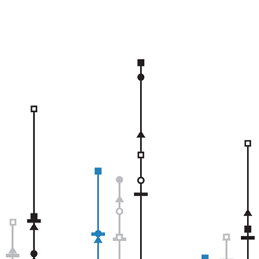

<h1>Publications</h1>

<div>
  <div class="keyword-toggle-container">
  <span class="label">Filter by keywords</span>
    <span class="btn btn-sm btn-default btn-keyword-all">
        All
    </span>
    <span class="btn btn-sm btn-default btn-keyword-none">
      None
    </span>
  </div>
  <div class="keyword-btn-container">
    {% for keyword in page.keywords %}
      <span class="chip active btn-keyword">{{ keyword }}</span>
    {% endfor %}
  </div>
</div>

{% for year_item in page.items %}
  <div class="pub-list columns">
    {% unless year_item.year == 9999 %}
      <div class="column col-12">
        <h3 class="pub-year">{{ year_item.year }}</h3>
      </div>
    {% endunless %}
    {% for item in year_item.items %}
      <div class="column pub-item col-12" id="{{ item.slug }}">
        <div class="card-publication columns">
          <div class="card-image column col-2 col-sm-12">
            <a href="#pub={{ item.slug }}">
              
            </a>
          </div>
          <div class="column col-10 col-sm-12">
            <div class="card-header">
              <h4 class="card-title">
                <a href="#pub={{ item.slug }}" class="pub-title">{{ item.title }}</a>
              </h4>
              <h6 class="card-subtitle">
                {{ item.authors }} ({{item.year}}){% if item.cite_text %}. {{ item.cite_text }}{% endif %}.
              </h6>
            </div>
            <div class="card-footer">
              {% if item.keywords.size > 0 %}
                <div class="pub-keywords">
                  {% for keyword in item.keywords %}
                    <span class="label pub-keyword">{{ keyword }}</span>
                  {% endfor %}
                </div>
              {% endif %}
              <div class="pub-btns">
                {% if item.pdf %}
                  <a class="btn btn-link btn-sm pub-btn tooltip"
                     data-tooltip="Get pdf"
                     href="{{ item.pdf }}">
                    <i class="fa fa-file-pdf-o"></i> pdf
                  </a>
                {% else %}
                  <a class="btn btn-link btn-sm pub-btn tooltip"
                     data-tooltip="Get pdf"
                     href="/pdfs/publications/{{ item.slug }}.pdf">
                    <i class="fa fa-file-pdf-o"></i> pdf
                  </a>
                {% endif %}
                {% if item.doi %}
                  <a class="btn btn-link btn-sm pub-btn tooltip"
                     data-tooltip="Open doi link"
                     href="https://doi.org/{{ item.doi }}"
                     target="_blank">
                    <i class="fa fa-external-link"></i> article
                  </a>
                  <a class="btn btn-link btn-sm pub-btn tooltip"
                     data-tooltip="Save to mendeley"
                     href="http://www.mendeley.com/import/?url=https://doi.org/{{ item.doi }}"
                     target="_blank">
                    <i class="fa fa-save"></i> save
                  </a>
                {% endif %}
                {% if item.preprint %}
                  <a class="btn btn-link btn-sm pub-btn tooltip"
                     data-tooltip="Open preprint"
                     href="{{ item.preprint }}"
                     target="_blank">
                    <i class="fa fa-external-link"></i> preprint
                  </a>
                {% endif %}
                {% if item.github %}
                  <a class="btn btn-link btn-sm pub-btn tooltip"
                     data-tooltip="Open github repository"
                     href="https://github.com/{{ item.github }}"
                     target="_blank">
                    <i class="fa fa-github-alt"></i> github
                  </a>
                {% endif %}
              </div>
              <div class="pub-abstract">
                <h6>Abstract</h6>
                  {{ item.abstract }}
              </div>
            </div>
          </div>
        </div>
      </div>
    {% endfor %}
  </div>
{% endfor %}

<div class="pub-list columns">
    
      <div class="column col-12">
        <h3 class="pub-year">2021</h3>
      </div>
    
    
      <div class="column pub-item col-12" id="modeling-future">
        <div class="card-publication columns">
          <div class="card-image column col-2 col-sm-12">
            <a href="#pub=modeling-future">
              
            </a>
          </div>
          <div class="column col-10 col-sm-12">
            <div class="card-header">
              <h4 class="card-title">
                <a href="#pub=modeling-future" class="pub-title">Modeling of Future COVID-19 Cases, Hospitalizations, and Deaths, by Vaccination Rates and Nonpharmaceutical Intervention Scenarios — United States, April–September 2021</a>
              </h4>
              <h6 class="card-subtitle">
                Borchering RK, Viboud C, ...... Reich NG, ...... Shea K, Lessler J (2021).
              </h6>
            </div>
            <div class="card-footer">
              
                <div class="pub-keywords">
                  
                    <span class="label pub-keyword">covid-19</span>
                  
                    <span class="label pub-keyword">forecasting</span>
                  
                </div>
              
              <div class="pub-btns">
                
                  <a class="btn btn-link btn-sm pub-btn tooltip" data-tooltip="Get pdf" href="https://www.cdc.gov/mmwr/volumes/70/wr/pdfs/mm7019e3-H.pdf">
                    <i class="fa fa-file-pdf-o"></i> pdf
                  </a>
                
                
                
                
              </div>
              <div class="pub-abstract">
                <h6>Abstract</h6>
                  What is already known about this topic?
  Increases in COVID-19 cases in March and early April occurred despite a large-scale vaccination program.
  Increases coincided with the spread of SARS-CoV-2 variants and relaxation of nonpharmaceutical interventions (NPIs).
What is added by this report?
  Data from six models indicate that with high vaccination coverage and moderate NPI adherence,
  hospitalizations and deaths will likely remain low nationally, with a sharp decline in cases projected by July 2021.
  Lower NPI adherence could lead to substantial increases in severe COVID-19 outcomes, even with improved vaccination coverage.
What are the implications for public health practice?
  High vaccination coverage and compliance with NPIs are essential to control COVID-19 and prevent surges in
  hospitalizations and deaths in the coming months.
              </div>
            </div>
          </div>
        </div>
      </div>
</div>
<script type="text/javascript" src="https://cdnjs.cloudflare.com/ajax/libs/jquery/3.2.1/jquery.min.js"></script>
<script type="text/javascript" src="{{ site.baseurl }}/assets/js/publications.js"></script>
